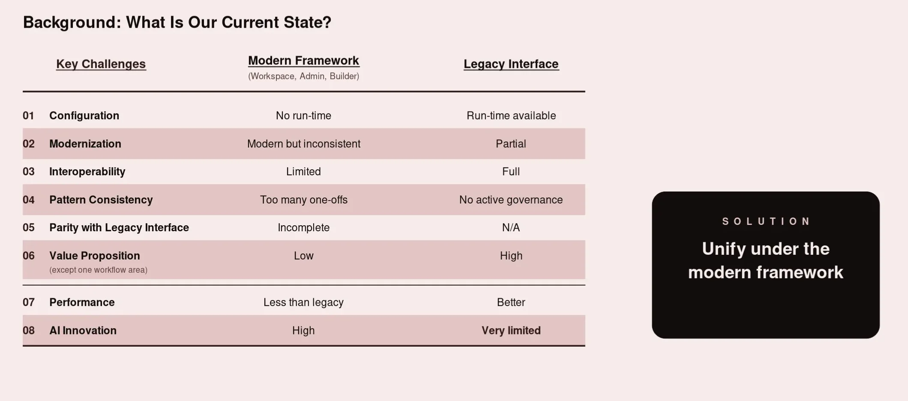
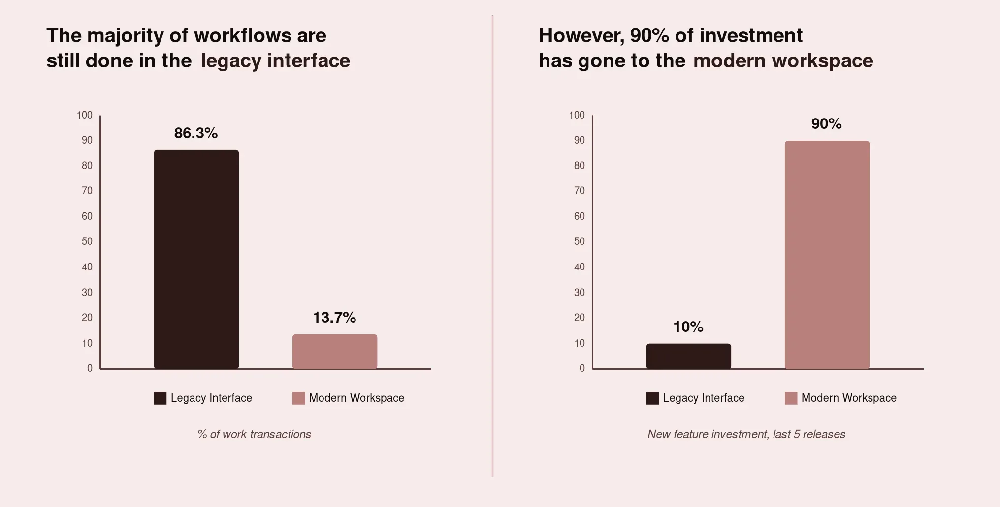
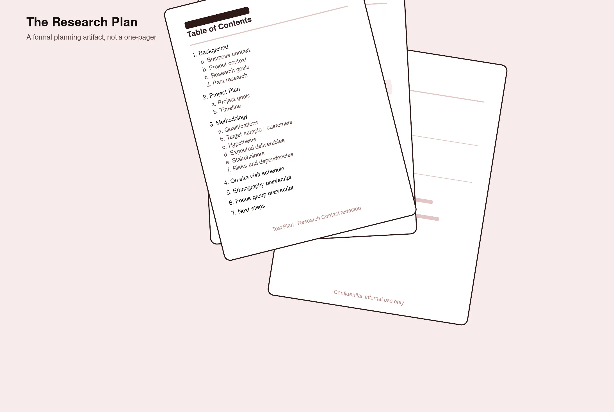
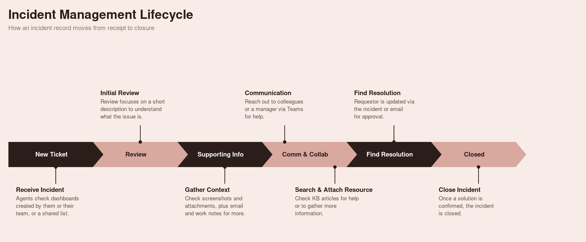
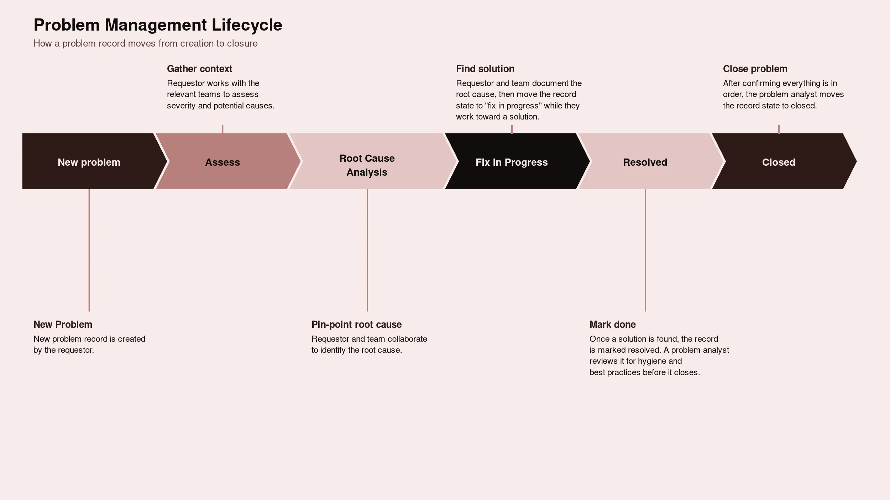
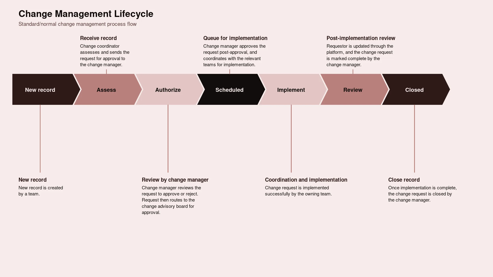
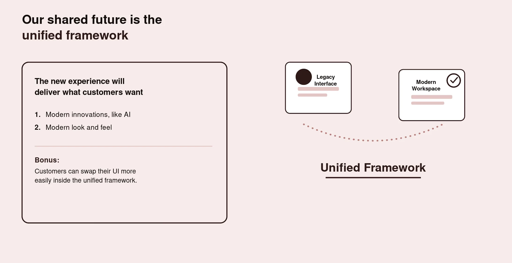

Overview
Role
Lead UX Researcher; Cross functional partners: Platform leadership (Product & Design) / Solution Consultants, Account Executives and Research Ops
Methods
Qualitative fieldwork: contextual interviewing, on-site observation, journey mapping, cross-functional synthesis
Timeline
6 months: longitudinal, mixed-methods research
Persona-tailored Discussion Guides
Rather than a single interview script for everyone, the guide branched deliberately by persona and by what that persona could actually speak to.
Context
Prior research had focused heavily on the modern interface's usability in isolation: its gaps, its feature parity relative to legacy. This study flipped that lens on purpose. Instead of asking what was wrong with the modern framework, it asked what was still pulling people back to the legacy interface, and treated low usage, despite adoption, as the object of study.
Impact
Track 1: Simplify the out-of-the-box modern experience.
Track 2: Build a narrow, script-only migration path for heavily customized customers.
Context

This study sat inside a bigger tension the platform organization was grappling with. A legacy interface still carried the large majority of customers' actual day-to-day work, while most of the recent product investment had gone toward building out a newer, modern interface. That gap between where the investment was going and where customers actually spent their time was the real trigger for this research. It wasn't a hunch that the new experience was missing features. It was a recognition that nobody had gone back to watch how people worked in the environment they'd built over years, and why they hadn't left it yet.
This is an important distinction from other research in the same program. This study was never about whether or how customers should migrate off legacy entirely. It was about why customers who already had the modern framework in hand weren't choosing to live in it day to day, and what would need to be true for that to change.
Prior research had focused heavily on the modern interface's usability in isolation: its gaps, its feature parity relative to legacy. This study flipped that lens on purpose. Instead of asking what was wrong with the modern framework, it asked what was still pulling people back to the legacy interface, and treated low usage, despite adoption, as the object of study.
Problem

Two things were true at once, and neither fully explained the other on its own.
First, customers preferred the legacy interface for reasons that had nothing to do with the modern framework being deficient. Customers had spent five-six years, in some cases the better part of a decade, layering customizations onto their legacy environment. The pattern was strikingly consistent: the out-of-the-box experience hadn't fully met their needs at the time they implemented it, so teams built around the gap. Over time, those customizations compounded quietly. New workflows were built on top of old ones, more integrations were added, more business rules accumulated, until the environment became something genuinely unique to that organization, and genuinely fragile to touch.
Second, customers had spent years, in some cases the better part of a decade, layering customizations onto their legacy environment. The pattern was strikingly consistent: the out-of-the-box legacy experience hadn't fully met their business requirements at the time they implemented it roughly five years ago, so teams built around the gap with custom scripts, business-policy logic, and UI customizations. Over time, those customizations compounded quietly, until the environment became something genuinely unique to that organization. Recreating that same coverage inside the modern framework, without a clear, low-effort path to do it, was a real barrier to shifting daily usage over, separate entirely from whether the modern framework was well designed.
A recurring and important nuance: by the time this research took place, many of the people currently maintaining these environments hadn't been there when the customizations were originally built. They were maintaining decisions they didn't make and, in several cases, couldn't fully explain. That gap in institutional knowledge made adapting to new modern framework slower than it needed to be, and left leadership with no quantified sense of whether the real blocker to usage was habit, missing OOTB coverage, or customization debt.
Research Goals
This study was ultimately structured around two core questions, and the findings below are organized to answer them directly:
Why do users still prefer the legacy platform, even after adopting the modern one? Not "what's wrong with the modern framework," but what the legacy interface is actually doing right, its mental model, its information architecture, so any push toward increased usage preserves what's working rather than accidentally designing it away.
What would it take to increase usage of the modern framework customers already have? Specifically, whether the modern framework could meet customers' business requirements out-of-the-box without added customization, and separately, what the smallest, most targeted path would be to help already-customized customers bring over just their custom scripts, not a full re-platforming, so daily work could move over without disrupting the business policies and UI logic they depend on.
Supporting goals that fed into those two questions:
- Understand the true end-to-end user flow, the features, functions, screens, data, and capabilities customers actually rely on in daily use, not just the ones product teams assumed mattered, and where the modern framework already covers that versus where it doesn't
- Identify what belonged in a simplified, more complete out-of-the-box modern experience versus what genuinely required dedicated script-migration tooling to solve
- Understand how customization depth correlates with modern-framework usage, so the org could tell apart customers who just need a simpler OOTB experience from customers who need help bringing over specific scripts
Target Respondents & Sample
The study combined two fieldwork phases: on-site visits with a smaller set of customers (4), followed by virtual interviews with a broader set (5), for a combined total of 9 customer organizations. This two-phase structure let the research pair the depth of in-person observation with the reach of remote interviews, rather than trading one off against the other.
All participating organizations had already adopted the modern framework at the account level; the qualifying criterion was current, active use of the legacy interface for a meaningful share of daily work despite that adoption, not non-adoption.
Respondents split into two persona groups, each interviewed with a tailored discussion guide rather than one generic script.
Individual contributors: IT Service Desk agents / Change Managers / Problem Managers / Major Incident Managers
Decision-makers: IT Directors / IT Managers
Customers spanned a range of company sizes and industries, skewing toward larger, more established enterprise accounts with long platform tenure. Those were the accounts with the most accumulated customization, and therefore the most riding on whether a simplified OOTB experience or a script-only migration path could actually get them into the modern framework day to day.
Cross-Functional Partnership
- Product: Came in trying to solve for increasing modern-interface usage numbers. Based on past research, the research team recommended reversing the framing, understand what was keeping users in legacy first, rather than push adoption directly, and aligned with Product on the resulting research questions before recruiting began.
- Platform Leadership (PM & Design Directors): Accompanied the research team on-site, actively participated in agent shadowing and journey-mapping workshops during customer visits, shaping real-time understanding of legacy preference.
- Solution Consultants & Account Executives: Identified and secured customers who fit the study's criteria and could accommodate in-person or virtual engagement.
- Research Operations: Established customer relationships as a longer-term partnership, and supported fieldwork logistics and data management post-visit.
- Engineering: Involved during research scoping to help define the problem statement and shape research questions, grounding them in technical feasibility before fieldwork began.
Research Rigor & Approach

Nature of the research
Purely qualitative and ethnographic. There was no survey instrument and no quantitative scoring layer. The entire study was grounded in direct observation, contextual interviewing, and structured synthesis across sessions. Prior related research in the same program had used journey mapping and rolling qualitative studies, and this study extended that same observational tradition into the adoption-versus-usage question specifically.
Remote/in-person
Mix of in-person and virtual engagement: Phase 1 consisted of on-site visits, where the Researcher, Designer and PM spent the day embedded with the customer's team, observing real work rather than a simulated task. Phase 2 shifted to virtual interviews to extend reach beyond what on-site logistics alone could support.
Scale & structure
32 one-on-one contextual inquiry sessions/interviews across 9 customer organizations, spanning high tech, telecommunications, retail, and manufacturing. Company size ranged from mid-market to large enterprise, weighted toward accounts with long platform tenure. Sessions ran roughly 60 minutes each, plus a separate 90-minute focus group per site visit and dedicated prototype testing blocks.
Session format
Each shadowing block followed the same shape regardless of persona or site: the researcher introduced themselves casually to set the participant at ease, then observed silently for the working block rather than interrupting mid-task, and saved clarifying questions for the end of a workflow or the end of the day rather than breaking someone's concentration mid-ticket. That structure was chosen deliberately. Asking "why did you just do that" in the moment changes the behavior you're trying to observe.
Tooling
- Notes and photos from each session were consolidated into a shared collaborative whiteboard so the research team could synthesize together instead of working from individual notebooks. Audio recordings (with consent) were transcribed and coded for themes in a dedicated research repository tool, which is what let the team trace a specific quote or pattern back to its source session during synthesis.
- The on-site guide consisted of physical workshop materials and standard recording equipment along with an on-site visit handout distributed to both internal and customer for the day of the visit.
- Internal team was tasked to take hand written notes in lieu of recordings when not allowed by customers for privacy concerns.
- Analysis and synthesis was done on MIRO and Dovetail.
Recruitment
- Participants had to be active users of the workflows under study within the past year, spanning both the legacy interface and the modern workspace their organization had already adopted. The team intentionally recruited across two segments it expected going in: individual contributors handling high ticket volume day to day, and decision-makers who could speak to budget and platform strategy. Company size and industry were tracked explicitly so the findings wouldn't skew toward whichever type of account happened to be easiest to reach.
- Customer participation was coordinated directly, one organization and one site at a time, rather than sourced through a market-research panel or open recruiting pool.
- Each visit had its own dedicated planning document, naming the specific company location, the internal team attending, and a fully custom agenda for every single visit: which points to a white-glove, relationship-based recruitment model typical of enterprise field research: participation was almost certainly secured through existing account relationships rather than cold outreach.
- Customers for on-site and virtual sessions were identified and long-term relationships were established by partnering with various customer facing teams like Customer Success, Outbound PMs, Account Executives and Solution Consultants.
Compliance & ethical guardrails
Every session opened with explicit, spoken consent before any recording started, not a buried disclosure in a calendar invite. Participants were told directly what would happen with what they shared. The team also built in an explicit check during planning: asking each site ahead of time what they would not want recorded or shared, so sensitive business detail could be excluded before it was ever captured rather than redacted after the fact.
Research Process
Formal Research Planning
Before any fieldwork began, the study was documented through a structured research plan. A formal planning artifact covering business context and project context (why this research, why now), a review of past related research, explicit project goals and a timeline, participant qualification criteria, a defined target sample and customer list, working hypotheses to test in the field, expected deliverables, a documented stakeholder list, and a risks-and-dependencies assessment.
Site Visit Design
Each on-site visit followed a structured, reusable guide: an orientation section establishing the purpose of the visit and each researcher's specific role on-site, a site-details and full-day agenda, a dedicated observational-inquiry guide, a structured contextual-interview guide, and a hands-on journey-mapping workshop activity. It was created as a repeatable, documented field methodology built so it could be run consistently across multiple sites without losing rigor between visits.
On-site days were structured around dedicated time blocks rather than a single long conversation.
- That typically included an orientation and introductions
- Multiple agent-shadowing sessions scheduled across the day so the research captured more than one person's way of working and,
- A dedicated debrief block at the end of the day to consolidate observation notes together as a team while the detail was still fresh, rather than relying on individual recall days later.
- Materials brought on-site were similarly deliberate: cameras and video-conferencing equipment to capture the environment for teammates who couldn't attend, and physical sticky notes and markers for the live journey-mapping workshop, chosen specifically so participants could co-build the journey map with the researcher rather than watch it happen to them.
Sessions consistently opened with an explicit framing to participants: why the research existed, what would happen with what they shared, and direct, spoken consent before recording began. Not a passive disclosure. Participants were also told plainly that the goal was to serve customers better, which mattered for rapport. This wasn't positioned as an audit of how they worked. It was positioned as an investment in fixing what wasn't working for them.
Persona-Tailored Discussion Guides
Rather than a single interview script for everyone, the guide branched deliberately by persona and by what that persona could actually speak to.
Individual-contributor sessions covered day-to-day mechanics in detail: how long the participant had been with the organization, team size and structure, hours of coverage (including whether the team ran 24/7 or in a traditional call-center model), which channels they supported (phone, email, chat, case), approximate ticket or case volume and how it flowed during peak periods, which tools they used day-to-day and whether they were on the legacy or modern interface, and, critically, open questions about the biggest gaps or problems they faced versus the biggest benefits they got from their current setup, plus whether the interface itself helped or hindered their productivity.
Decision-maker sessions focused on strategic framing rather than moment-to-moment mechanics: business objectives, current initiatives and KPIs, organizational priorities, and appetite for platform change. That's the context needed to understand not just what individual contributors experienced, but why the organization had or hadn't acted on it.
This split mattered for portfolio purposes specifically because it shows a deliberate instrument-design choice: recognizing that a single script can't serve both an agent describing their morning and a director describing budget priorities, and building two guides instead of forcing one.
Workflow lifecycles studied in depth
- Incident management: mapped end-to-end from initial ticket receipt through investigation, resolution, communication, and closure, including where agents got stuck, what tools they reached for outside the platform, and where communication broke down with requestors
- Problem management: mapped from problem creation through root-cause analysis, fix-in-progress, resolution, and closure, with particular attention to how cleanly (or not) users understood the state transitions in that lifecycle
- Change management: mapped from new change request through assessment, authorization, scheduling, implementation, and post-implementation review, including the approval workflow and how change requests moved through governance
Each lifecycle was documented as a full process map with swimlanes by role, then annotated with the specific customizations, workarounds, and friction points observed at each stage, and, critically, whether each friction point was a legacy-habit issue, a missing-OOTB-capability issue, or an unmigrated-customization issue. Not just a generic "here's the ideal workflow" diagram.



Findings

Theme 1: Legacy usage persisted because of a strong, earned mental model, not because the modern framework was broken
This theme answers the study's first core question: why do users still prefer the legacy platform, even after adopting the modern one? Across nearly every session, customers kept working in the legacy interface not because it was better designed in the abstract, but because it had earned a strong, reliable mental model of how work gets done, reinforced by five or more years of muscle memory. Three things came up specifically and repeatedly:
- A vertical, single-scroll layout with information architecture that matched how people actually triaged their work: the most important information and functionality front-loaded at the top, secondary supporting information below it, and lower-priority detail further down as they scrolled. Users didn't have to relearn where to look, the hierarchy of the page matched the hierarchy of their attention.
- Deep familiarity built over years of daily use, participants weren't guessing where a function lived, they knew it instinctively.
- Personalized lists and filters they'd built over time, which the legacy interface preserved.
One agent described the current legacy form and experience as intuitive and logical specifically because of that front-loaded, priority-ordered structure. That's a strong signal that "modern" and "better" aren't the same claim to a daily user, and that any effort to increase modern-framework usage has to explicitly preserve that information hierarchy and mental model, not just port over features, or it risks designing away the exact thing keeping people on legacy.
Theme 2: Customization debt was the second, separate barrier to usage, and it's a script problem, not a platform problem
This theme answers the study's second core question: what would it take to increase usage of the modern framework customers already have? Across nearly every customer studied, the same origin story repeated: the out-of-the-box legacy experience hadn't fully met the organization's business requirements at the time of implementation roughly five years ago, so teams built around the gap with custom scripts, business-policy logic, and UI customizations. Over the years since, that pattern compounded, until each organization was running a genuinely unique and fragile environment representing real accumulated customization debt.
That history is what defines the real bar for increased usage. Customers weren't asking to migrate their whole operation off legacy. They were asking for one of two things, depending on how customized they already were: a modern framework that met their business requirements out-of-the-box without added customization, or, for the heavily customized accounts, a clear, low-effort way to bring over just their existing custom scripts into the modern framework, without having to touch or re-risk the business policies and UI logic built around them. Anything that looked like a full re-platforming effort was, to them, disproportionate to the actual ask.
Theme 3: Two distinct customer segments, two distinct paths to increased usage
Customers split cleanly into two groups by customization depth, and each group needed a different lever pulled to move more of their daily work into the modern framework.
The first group had lighter customization: few or no custom scripts, minimal deviation from the out-of-the-box legacy product. For this group, the barrier to increased usage was a simplicity gap, they needed the modern framework's out-of-the-box experience to be simple and complete enough to just start working in day to day, with no customization effort required at all.
The second group had heavy customization: several custom scripts and extensive configuration layered in over years. For this group, the barrier wasn't OOTB simplicity, it was the absence of a low-effort path to bring their specific scripts into the modern framework without disrupting the business logic those scripts encoded. They weren't looking for a smaller, simpler modern experience. They were looking for a script-migration path narrow enough that it didn't touch anything else.
Treating those two groups as one audience with one fix was part of why usage of the already-adopted modern framework wasn't moving.
Theme 4: Configuration and customization are conceptually confused
Some customers understood the distinction between configuration (supported, low-risk changes) and customization (code-level changes that carry real technical debt) clearly. Others didn't, and that gap in understanding had real consequences. In one session, a manager admitted their team had probably over-customized specifically because they couldn't distinguish a configuration from a customization in the first place, which meant they also couldn't weigh the cost of a given change against what the modern framework already offered out of the box. If a team can't tell the two apart, they can't accurately judge how small or large a lift moving to the modern framework would actually be, which itself becomes a barrier to trying.
Theme 5: The same technical-debt cycle repeated everywhere, independent of industry or size
The pattern showed up as a closed loop, not a one-time decision: accumulating technical debt on legacy led teams to consider using the modern framework more, which led some of them to try to simplify complex processes first, which led some of them to want to revert to a purely out-of-the-box approach entirely, which reset the cycle back to square one without ever meaningfully increasing modern-framework usage. One IT manager put it plainly: the problem was that they kept accruing technical debt and never evaluated it when something new came along. They just kept adding to it, to the point where the honest question internally was whether they could just rip everything out and start fresh from a clean, out-of-the-box state. That cycle repeated almost identically across industries and company sizes, which is what made it feel structural rather than specific to any one customer's habits.
Theme 6: Specific, recurring customization patterns emerged across workflows
A few customization patterns showed up consistently enough, across otherwise very different customers, to be worth naming directly, and each one is a concrete candidate for the script-migration path in Theme 2 and Theme 3.
- Configured lifecycle states were the most common customization in change management, with the number of custom states varying widely by customer, from a handful up to well over a dozen.
- Custom action buttons appeared repeatedly in problem management workflows, added specifically because the equivalent action didn't exist out of box in legacy at the time.
- Theming and branding (custom colors, labels, and visual identity applied to the interface) turned out to be a customization type nearly every customer had done in some form, independent of their industry or how complex their other customizations were.
None of these patterns were unique to one account. They were the same handful of gaps, solved the same handful of ways, over and over, which is exactly the kind of finding that turns into a targeted, scoped script-migration capability instead of an open-ended one.
Impact: Strategic Contribution
This research moved well beyond a usability readout. It directly shaped a two-track adoption strategy focused entirely on increasing usage of the modern framework customers had already adopted, not on migration:
Track 1: Simplify the out-of-the-box modern experience. For lightly customized customers, the research justified investing in a more complete, simpler OOTB modern configuration that required no customization to start using day to day, closing the simplicity gap identified in Theme 3.
Track 2: Build a narrow, script-only migration path for heavily customized customers. For the second segment, the research justified a dedicated capability scoped specifically to bringing over existing custom scripts into the modern framework, without touching the surrounding business policies or UI logic those customers depended on. This was explicitly scoped narrower than a full migration or re-platforming effort, its only job was to remove the script-carryover barrier identified in Theme 2 and Theme 6.
Perhaps most importantly, this research reframed the roadmap conversation away from "how do we get people to migrate" and toward "how do we make it easier to just start using what people already have." That distinction mattered: it meant the roadmap didn't need to solve for wholesale change management, it needed to solve for two specific, narrow barriers, one about simplicity, one about scripts.
Recommendations that came directly out of the research
- Invest in a simplified, more complete out-of-the-box modern configuration for lightly customized customers, so starting to use the modern framework day to day requires no customization effort
- Build a dedicated, narrowly scoped script-migration capability for heavily customized customers, limited specifically to bringing over their existing custom scripts, not their full environment, so business policies and UI logic already in place stay untouched
- Preserve the legacy interface's core information hierarchy, most-important-information-first, vertical scroll, personalized filters, in any modern-framework improvements, rather than assuming a different layout is automatically an improvement
- Treat customization depth as a segmentation variable for the org going forward, since it determines which of the two tracks above a given customer actually needs, and a one-size-fits-all push doesn't move usage for either group
Limitations & Reflections
Limitations
This study skewed toward larger, more established enterprise accounts with long platform tenure and the most accumulated customization, which was intentional, they had the most at stake in whether either track would work for them, but it means the findings may understate how lighter, newer accounts experience the same adoption gap. A focused follow-up with less-tenured, less-customized accounts would help confirm whether the OOTB-simplification track alone is sufficient for that segment, or whether it needs its own distinct treatment.
Reflections
The biggest lesson from this study was that low usage of an already-adopted modern framework was never really about the modern framework being deficient. Customers weren't staying on legacy because they thought it was better designed. They were staying because legacy matched a mental model they'd built over years, and because moving their daily work over meant either giving up customizations they depended on, or trying to recreate business logic the modern framework didn't yet offer out of the box. Neither of those is a UI problem, and neither is solved by a broader migration push. Simplifying the OOTB experience for one segment and narrowly scoping a script-only path for the other, without asking anyone to fully migrate, was the single most important shift this research produced.